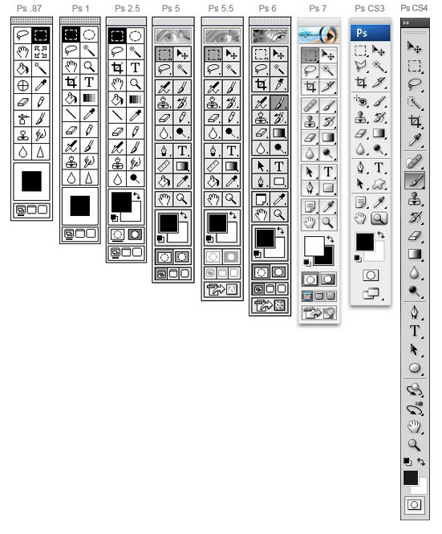
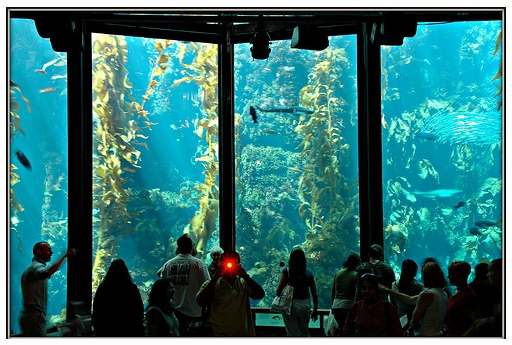
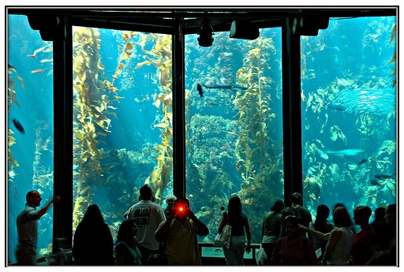
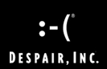
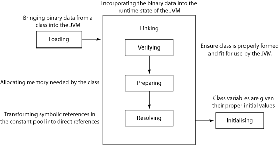
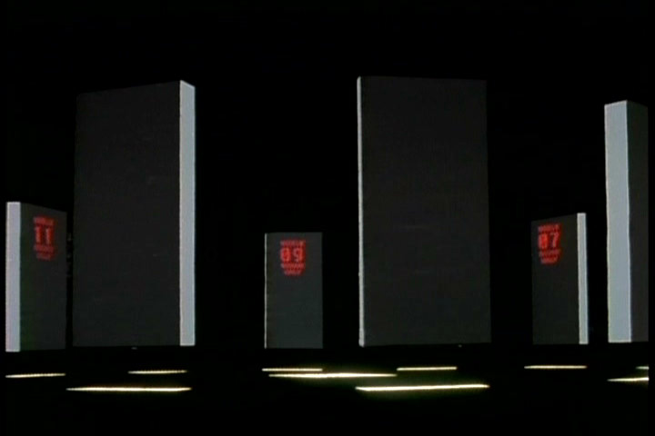
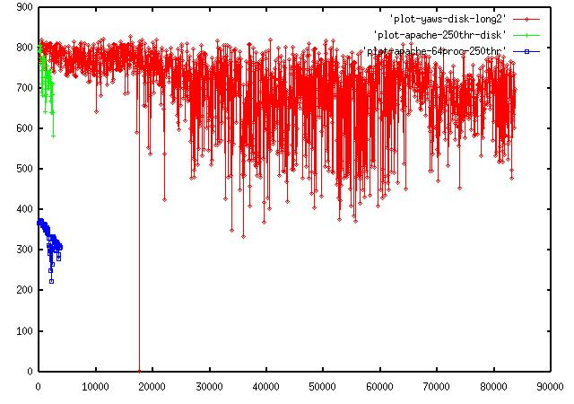
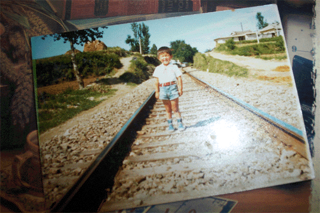
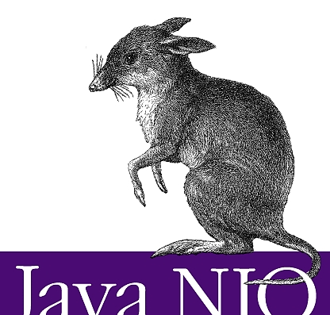

20081231
The World Surrounded By All Workaround.
http://nomanisanisland.monolar.de/wp-content/2007/08/workaround.jpg
20081230
딱 100번만 더 연습하세요. 아니, 좀 쉬세요. Repeat just 100 times again. No no, just get some rest. http://www.lionking.name/Picture/ACT2%20Pictures/PumbaaBows.jpg20081229
신기술들은 프로그래머의 자기만족만을 위한 기술이 아닐까 하는 의문이 듭니다. ... 에러없이 돌아가는 것을 원하지 신기술 따윈 관심도 없습니다. http://www.okjsp.pe.kr/bbs?seq=130710 http://www.camt100.ca/images/sun3.gif20081227
Eclipse 이렇게 빠른 속도로 진행하면서도 안정적일 수 있는 이유는 자동화된 테스트 프레임워크를 함께 키워가기 때문이 아닌가 생각됩니다. http://www.okjsp.pe.kr/seq/130595 https://www.digimarc.com/govt/images/dl_test.jpg20081226
딱 100번만 더 연습하세요. Repeat just 100 times again. http://www.zimbio.com/pictures/6xHvHETchOO/Indianapolis+500+Practice/33pwdiDt0Eq20081224
 http://cache.gawker.com/assets/images/gizmodo/2008/12/ps-evolution-cs4.jpg 왜 이러지20081222
http://ps.kwzf.net/ 수학, 음악 끝이 없구나. 잘 됐다. 인생은 짧고 예술은 길다. Life is short, art is long.20081221
20081220
그디어 때가 온것 같다. It's time. 궁금하다. 너무 욕심이다. 지적 호기심 많은 교재에 나왔던 많은 수학자들, 이해가 안가는 수식, 이론들 Euler's formula De Moivre's formula
20081217
자신감, 용기는 그 무엇보다도 중요하단다. Nothing is more important than confidence and courage.20081215
Human Instrumentality Project (人類補完計劃, Jinrui Hokan Keikaku, mankind complementation/completion plan) http://en.wikipedia.org/wiki/Human_Instrumentality_Project http://anime.nx-studio.net/media/images/neon_genesis_evangelion/neon_genesis_evangelion_img62.jpg
Absolute Complementhttp://upload.wikimedia.org/wikipedia/commons/thumb/8/8c/Absolute_complement.svg/270px-Absolute_complement.svg.png
20081211
Perpetual Motion in D Major - Shinichi Suzuki http://www.marcdatabase.com/~lemur/graphics/rb-levy-franklin-perpetual-2.jpg20081210

20081206
MapReduce http://farm3.static.flickr.com/2133/2179187226_e2e107e0cd.jpg?v=0 Tessellation http://upload.wikimedia.org/wikipedia/commons/thumb/6/6a/Wallpaper_group-p3-1.jpg/300px-Wallpaper_group-p3-1.jpg20081205
How old are you, and how old were you when you started coding?
http://stackoverflow.com/questions/327973/how-old-are-you-and-how-old-were-you-when-you-started-coding20081203
Are you not dead yet? DDR SDRAM Double Data Rate Synchronous Dyanamic Random Access Memory http://educations.newegg.com/category/147/buy/image03.jpg Google's Original Hardware Photos http://portent.org/images/google_hardware.jpg20081127
http://a0.vox.com/6a00c225204456604a00d09e7c0530be2b-500pi 탱고의 느낌에 그루브한 일렉트로니카 그리고 클래식컬 Epoca
20081126
불완전한 마음의 보완, 불필요한 몸을 버리고 모은 영혼을 지금, 하나로 - 아카리 겐도 인류는 이제 더 이상 혼자가 아니다. - 유년기의 끝20081125
20081124
Astor Piazzola
http://media-2.web.britannica.com/eb-media/51/92951-004-C164EB26.jpgArthur Charles Clarke
http://image.aladdin.co.kr/Community/mypaper/pimg_773562125362037.jpg20081123
인생은 나에게 벅차다. My life is too much for me.The otherworlds
20081120
http://tbn0.google.com/images?q=tbn:3NjHEf8nBl3jsM:http://adamhumphrey.net/images/portfolio/reverse_engineering.gif20081117
인생무상
Red at morn, dead at eve. Life is nothing.Absolutely No Regrets
http://www.crystalcosmos.com/Crystal%20Absolutely%20NO%20Regrets.jpg 해도 후회 안해도 후회 하고 후회 그리고 조금씩20081116
Proto Type Test Type Production Model Mass Production Model 고독, 인간소외, 타인에 대한 몰이해, 마음의 성장 http://evangelion.ohpy.com/wpage/13 |
20081113
용기와 확신
소프트웨어 이야기 인생은 best practice가 없다. 소프트웨어도 best practice가 없다. 인생도 모르겠고 소프트웨어도 모르겠다. 좀 쉬우면 좋겠다. 첼로 이야기 악기 하나쯤 연주할 줄알면 좋겠다. 신세기 에반게리온(Neon Genesis EVANGELION) EVA-02와 EVA 양산형의 전투신의 Bach의 G선상의 아리아 배경음악 클래식 음악에 관심 비올라 배워볼까 고민 베토벤 바이러스 첼로구입, 레슨, 연습, 연습, 연습, 연습, 연습20081108
Just Another Day - Jade Valerie
 http://instapinch.com/blog/wp-content/photos/Just_another_day_at_office.jpg
http://instapinch.com/blog/wp-content/photos/Just_another_day_at_office.jpg
20081107
자연의 이치 세상의 순리 http://www.youtube.com/watch?v=IGU_SHufUBk20081106
자만심을 버리고 자신감을 갖자. 원래 처음엔 힘들어. 오 재밌어. 자신감 충만. 새로운 선생님 너무 마음에 들고. 실력이 곧 권위입니다. 프로는 즐겁지 않아. 그래도 조금 즐거운 프로가 되고 싶은걸.20081104
http://www.jdocs.com/eclipse/3.1/org/eclipse/core/runtime/IAdapterFactory.html20081101
Unfortunately, a class doesn't always implement the interface you need. It might not implement it because there are only some cases where it is valid, or because it is a type in an unrelated library, or because the interface was developed after the original class was written. http://www.eclipsezone.com/articles/what-is-iadaptable/ package org.eclipse.core.runtime; public interface IAdaptable { public Object getAdapter(Class adapter); } http://www.koders.com/java/fid4C8AC25608B8995D9C6CB76FB401F7C23EEA0DDB.aspx IAdapterFactory, a facility for transforming objects of one type to objects of another type IAdaptable, an object that declares that it can be adapted. This object is typically the input of the adaptation process Adapters, the output of the adaptation process. No concrete type or interface is associated with this output; it can be any object IAdapterManager, the central place where adaptation requests are made and adapter factories are registered PlatformObject, a convenience superclass that provides the standard implementation of the IAdaptable interface http://wiki.eclipse.org/FAQ_How_do_I_use_IAdaptable_and_IAdapterFactory%3F20081029
모든 욕심을 내려놓고. http://blog.ohmynews.com/attach/2087/1090837889.jpgGAU-8 Avenger http://www.military-page.de/waffen/mk/gau8/bild_gau8_02.jpg
20081023
사랑할 수 있는 한 사랑하라 오, 사랑하라. 사랑할 수 있는 한 사랑하라. 오, 사랑하라. 사랑할 수 있는 한 사랑하라. 그 시간은 오는 것, 바로 그 시간. 무덤 가에서 서서 통곡할 시간은 오는 것. 그리고 걱정하라. 심장이 끊어오를 그 걱정을. 사랑은 지속된다. 그를 보고 너의 심장이 따스하게 고동칠 때까지만. 너에게 가슴을 열어 누가 다가오거든 네가 할 수 있는 것은 오직 사랑하는 일뿐! 매순간 행복하게 조금도 슬프지 않게 그리고 너의 말을 조심하라 남을 해치는 말은 쉽게 나오나니 "오, 하나님. 내 뜻은 그게 아니었습니다." 라고 말할 땐 그 사람은 벌써 마음의 상처를 입고 터난 후이리라. http://neungae.egloos.com/394520720081018
Design for Test. 테스트를 위해서 설계하라. DFT http://blog.naver.com/websearch/7003510380120081017
하루 20분씩 세가지 영어, 악기, 운동20081016
우리가 서로 다르다는 것을 인정할 때, 비로소 진정한 이해와 소통이 시작된다 http://me2day.net/sunnykwak/2008/10/16#10:59:4720081015
I knew if I stayed around long enough, something like this would happen. Shaw, George Bernard 우물쭈물 살다가 내 이렇게 끝날줄 알았다. http://pds8.egloos.com/pds/200801/23/54/c0073554_47973d6756e18.jpg20081013
이래도 한평생 저래도 한평생20081012
Ganymede - 개'너믿20081010
20081002
Cello Play Wish List | BWV 1068 Air On The G String |  | Libertango |
 | Gounod Ave Maria |  | Lascia Ch'io Pianga |
 | BWV 1056 Harpsichord Concerto in F Minor - Largo(Ab Major) |  | Ave Maria for cello by Giulio Caccini |
20080928
http://www.office-gagu.co.kr/shop/shop/item.php?it_id=1210118400 Libertango
20080927
I signed the contract for avante. http://www.hyundai-motor.com/showroom/Carinfo/SR_Main.aspx20080925
Astor Piazzolla - Libertango

20080923
Don't Feel Sorry For Yourself. Feeling sorry for yourself is a waste of time. http://fruityoaty.com/wp-content/uploads/2006/10/charlie_brown_moping.gif They went wild when their team socred.20080922
 베토벤 바이러스
이기적이 되어야 합니다.
여러분들은 너무 착해요.
아니 착한 게 아니라 바보입니다.
부모때문에, 자식때문에, 애때문에 희생했다? 착각입니다.
결국 여러분들 꼴이 이게 뭡니까.
하고 싶은 거 못하고 생활은 어렵고
주변 사람들 누구누구 때문에 희생했다, 피해의식만 생겼지 않습니까.
이건 착한 것도 바보도 아니고 비겁한겁니다!
맘만 먹으면 얼마든지 만들어낼 수 있는 백가지도 넘는 핑계대고 도망친겁니다.
Beethoven Virus
Be slefish.
You are all kindhearted.
You are not kindhearted, you are an idiot.
For parents and childrens, I sacrificed for them. It's your mistake.
Look at what the hell you are.
You couldn't do what you want, you made a poor living.
I sacrificed for someone so there is only a prejudice of the victom in your mind.
You are not kindhearted, you are not an idiot. you are a coward.
You just made a lof of execues to make easily and you ran away from there.
베토벤 바이러스
이기적이 되어야 합니다.
여러분들은 너무 착해요.
아니 착한 게 아니라 바보입니다.
부모때문에, 자식때문에, 애때문에 희생했다? 착각입니다.
결국 여러분들 꼴이 이게 뭡니까.
하고 싶은 거 못하고 생활은 어렵고
주변 사람들 누구누구 때문에 희생했다, 피해의식만 생겼지 않습니까.
이건 착한 것도 바보도 아니고 비겁한겁니다!
맘만 먹으면 얼마든지 만들어낼 수 있는 백가지도 넘는 핑계대고 도망친겁니다.
Beethoven Virus
Be slefish.
You are all kindhearted.
You are not kindhearted, you are an idiot.
For parents and childrens, I sacrificed for them. It's your mistake.
Look at what the hell you are.
You couldn't do what you want, you made a poor living.
I sacrificed for someone so there is only a prejudice of the victom in your mind.
You are not kindhearted, you are not an idiot. you are a coward.
You just made a lof of execues to make easily and you ran away from there.
20080921
Greek alphabet Α α alpha 알파 Β β beta 베타 Γ γ gamma 감마 Δ δ delta 델타 Ε ε epsilon 엡실론 Ζ ζ zeta 제타 Η η eta 에타 Θ θ theta 세타 Ι ι iota 요타 Κ κ kappa 카파 Λ λ lambda 람다 Μ μ mu 뮤 Ν ν nu 뉴 Ξ ξ xi 크시 Ο ο omicron 오미크론 Π π pi 파이 Ρ ρ pho 로 Σ σ sigma 시그마 Τ τ tau 타우 Υ υ upsilon 입실론 Φ φ phi 피 Χ χ xhi 키 Ψ ψ psi 프시 Ω ω omega 오메가 http://en.wikipedia.org/wiki/Greek_alphabet Ron Rivest http://people.csail.mit.edu/rivest/
Asymmetric Key Encryption(Public Key) - RSA
Symmetric Key Encryption - RC2, RC4, RC5, RC6
Message Digest(Cryptographic hash fuction) - MD2, MD4, MD5
http://en.wikipedia.org/wiki/Ron_Rivest
Giant Kelp

http://www.flickr.com/photos/inderstadt/2429488887/
http://stackoverflow.com/
http://people.csail.mit.edu/rivest/
Asymmetric Key Encryption(Public Key) - RSA
Symmetric Key Encryption - RC2, RC4, RC5, RC6
Message Digest(Cryptographic hash fuction) - MD2, MD4, MD5
http://en.wikipedia.org/wiki/Ron_Rivest
Giant Kelp

http://www.flickr.com/photos/inderstadt/2429488887/
http://stackoverflow.com/
20080920
입에 살살 감기는 영어문장들 Out of nowhere a man loomed up in front of us. 핑계입니다. http://chopperdanceblog.com/wp-content/uploads/2007/11/no-excuse.thumbnail.jpg20080917
chin up two-dyas. 세상 태어나서 한개의 턱걸이도 해본적이 없다. I have never chin-up even one time yet. http://www.bodyessence.ca/images/chinup1.jpg20080916
제가 쫌 그래요.  http://despair.com/ http://despair.com/ir.html20080915
동생의 NateOn의 친구들의 대화명 일부 훔쳐보기 - 일상에서 싸우기 - Alone.. A Lovely Oasis Not for Everybody. - 오늘이 마지막인것처럼 살자. - 살짝미치면 인생이 즐겁다. - 종착역~~ 모두 내리세욧 - Impossible is I'm possible.20080914
여러분의 애플리케이션은 온실 속의 화초가 아니다. - release it, p4 실제 의도하는 로직에서 logging을 위해 validation을 위해 확장성을 위해 performance를 위해 readability를 위해 수십, 수백배의 비용이 발생한다. 실용주의 ivory tower architect pragmatic architect
A: 저 쉬운게 뭔가요? B: 네, 테스트죠. A: 저 그럼 가장 어려운게 뭔가요? B: 당연, 테스트죠. 쉬우면서도 가장 어려운게 테스인 것 같습니다. |
A: what is easy thing? B: uhm. test A: Well, What is the most difficult thing to you? B: Absolutely, test. Easy but the most difficult thing is the test. |
20080910
Mini Big Bang http://blog.naver.com/pmk6140?Redirect=Log&logNo=80055815732
아침에 일어나 회사를 가고 점심을 먹고 저녁에 퇴근하여 집에서 쉬고 잠자는 행복 |
Get up in the morning, go to work, have a lunch go home, relax and sleep, my happiness. |
20080909
실패, 후회는 나의 자산 Failures, regrets are all my property. http://farm4.static.flickr.com/3264/2550973858_47b23ff570.jpg?v=0 shelve, incur, consensus20080908
Dragons Blood Tree socotra, yemen 너도 그렇게 혼자 서 있었니? Did you stand all alone like that, too? http://images.china.cn/attachement/bmp/site1007/20080505/0019b91ed7d10988c47942.bmp20080907
* JKS : Java KeyStore * PKCS12 : Public-Key Cryptography Standards * DSA : Digital Signature Algorithm * RSA : Rivest Shamir Adleman * SHA : Secure Hash Algorithm * JCE : Java Cryptography Extension * JSSE : Java Secure Socket Extension * SSL : Secure Socket Layer * TLS : Transport Layer Security http://coffeenix.net/doc/network/ssl_handshake.jpg20080903
chrome20080901
Childhood's End.20080829
싫다 싫어 꿈도 사랑도 http://img388.imageshack.us/img388/6837/senzanome65yw.jpg20080827
이론보다 툴 이론보다 현실 http://j2s.sourceforge.net/articles/screenshots/hello-j2s-inheritance-jdt-refactor.png Mediterranean http://www.theurbanbrain.com/denver/wp-content/uploads/2007/04/mediterranean.gif
attire, ballot, cutlery, poultry, crate, boulevard, courier, compartment, adjacent, complimentary, furnish, cater, hail, curb, accommodation
http://www.theurbanbrain.com/denver/wp-content/uploads/2007/04/mediterranean.gif
attire, ballot, cutlery, poultry, crate, boulevard, courier, compartment, adjacent, complimentary, furnish, cater, hail, curb, accommodation
20080825
Content Assist가 우리를 구원할 지니 Content Assist가 없으면 50점 따라서 나도 50점 unspecified transaction context20080824
압더부카??of the book I read 인생에는 Best Practice가 없죠. http://www.okjsp.pe.kr/seq/122213 "나의 정의가 너의 정의는 아니다." 나는 우주고 당신도 우주고 세상도 우주다. I'm the universe, you're the universe, thw world is the universe. http://persistentillusion.files.wordpress.com/2008/04/universe.jpg20080821
자연, 인간 정말 위대하다. You only see what you know. http://www.iknow.co.jp http://www.iknow.co.jp/free20080818
점점 Eclipse Monkey에 빠져들고 있다. Shift + Alt + F1 Plugin-in Spy와 API문서를 보면서 Eclipse를 해부하는 것 같은 느낌 Eclipse Monkey에 content assist 기능이 추가되는 날엔 어떤 일이 벌어질지 모르겠다.20080814
Stacy Kohut When I was a kid I don't think anything was impossible. I could do grides, front-slide board slide, even lean airs. but then impossible came at me in a diffent way, it ain't that big a deal. I'm still on four wheels.
20080812
Eclipse Monkey. 뭔가 심상치가 않다. 정말로 모든 것은 Eclipse로... 모든 것을 가능케 하는 힘 그것은 이미 네 안에 있다. Everything You Need Is Already inside. I've Got Soul But I'm Not A Soldier.20080809
에라 모르겠다. 네 멋데로 살란다. No-Pain-Huge-Gain Solution http://agbird.egloos.com/3087100 극단적이지 말자. 알잖아 타협해야 하는거.20080728
어처피 모두를 만졸 시킬 순 없어. 그러니 너를 위해 일해. You can't please everyone so you gotta please yourself. 리키 넬슨, "정원 파티" (via A. Zee [양자장론의 핵심]) http://extrad.egloos.com/178178920080726
개선, 개선, 개선 연습, 연습, 연습 테스트, 테스트, 테스트20080725
Heath ledger, Joker This town deserves a better class of criminal. And I'm gonna give it to 'em20080724
스폰지밥은 스폰지가 아니구나 해면동물이구나.20080722
OSGi - Open Service Gateway Initiative Dynamic Module Systemf for java Apache Felix, Knopflerfish, Equinox20080720
바베큐소스도 테스트하고 수박도 테스트도 하고 골뱅이 통조림도 테스트하고 비행기도 테스트 하고 자동차도 테스트하고 휴대폰도 테스트하는데 말이지 I'm an ordinary cold fish.http://www.voanews.com/specialenglish/2008-06-30-voa2.cfm A red herring holly mackerel green around the gills packed in like sardines a cold fish
20080719
Class Loading  http://www.ibm.com/developerworks/kr/library/j-dclp1/20080714
이제야 깨달았어. 왜 테스트를 먼저작성하고 그 뒤에 코드를 작성하는지. 겪어보지 않으면 모른다. Goodbye 37 inches20080712
간단하고 단순한 것만 살아남을지니. SMTP, S is Simple. RSS, R is Really and S is also Simple.20080711
테스트하셨나요? Did you test that? Internal combustion engine Four stroke suck-squeeze-bang-blow intake-compression-combustion-exhaust http://en.wikipedia.org/wiki/Internal_combustion_engine
http://en.wikipedia.org/wiki/Internal_combustion_engine
20080710
MORPHEUS: If you never know failure, how can you know success?20080707
\uAC00-\uD7A3 : 한글 완성형20080705
Tesla Revisited20080704
Pocupine, HedgeHog Life is short, Art is Long. Life is short, Code is Long. Love it or leave it. 이도 저도 아닐때도 있다. 어쩔수 없다.20080703
20080702
When you got nothing, you got nothing to lose20080629
Eternal Sunshine Of The Spotless Mind(2004) 컴퓨터 프로그램을 작성하는 일은 재미있다. 그리고 잘 작성된 프로그램을 읽는 것도 재미있다. 세상에서 가장 즐거운 일 중 하나는 여러분이 작성한 컴퓨터 프로그램을 다른 사람들 혹은 여러분 자신이 읽고 기쁨을 얻는 것이다. 컴퓨터 프로그램은 또한 유용한 작업을 수행할 수도 있다. 세상에것 강장 큰 성취감을 맛보는 순간은 여러분이 창조한 무엇이 사회의 부와 진보에 기여한다는 사실을 깨닫는 순간이다. 어떤 사람들은 컴퓨터 프로그램을 작성함으로써 돈을 벌기도 한다. 따라서 프로그래밍은 세가지 측면에서 결실을 맺는 행위다. 미학적으로, 인류학적으로 그리고 경제적인 면이 바로 그러한 결실에 해당한다. - "문학적 프로그래밍" 서문에서 - 누어서 읽는 알고리즘 p.129 창조의 기쁨을 아는 사람과 그렇지 않은 사람이 발휘하는 능력에는 본질적인 차이가 존재하기 때문이다. http://marga.tistory.com/4720080628
Uroboros Donnie Darko Children Of Men20080626
나의 영혼을 나 스스로 갉아먹지 말자. 제발. Simplicity http://monac.egloos.com/1950488
http://monac.egloos.com/1950488
20080623
2001: A sapce odyssey(1968) Neon Genesis Evangelion(1994) 

|

|

|
20080621
칼 마르크스는 지성의 첫걸음이 모든 것을 의심하는 거이라고 말했다. p88 http://autos.aol.com/?ncid=AOLCOMMautoDYNLprim0001&icid=100214839x1204267855x1200186361Donnie Darko 뭐 딱히 할 말이 없음. 난 몰라
20080620
Good Will Hunting converted by http://labs.wanokoto.jp20080619
정말 너무 또 뭐가 있나 기막히게 재밌다. 단숨에 다 읽어 버렸다.코드, 아~~ 후회의 연속이구나.
20080617
Good judgement comes from experience, and experience comes from bad judegment. - Fred Brooks the best code is no code at all.20080616
Pamela Zave 소프트웨어 공학의 목적은 복잡성을 제어하는 것이지, 복잡성을 만드는 것이 아니다. The purpose of software engineering is to control complexity, not to create it. 빌드하기 쉽고 사용자를 기쁘게 하는 단순하고도 강력한 프로그램을 작성하는 것이야말로 프로그래머의 궁극적 목표이고, 앞의 다섯 칼럼에 강조한 것이다. - 생각하는 프로그래밍, Programming Pearls 2/E 코드는 라인당 950원, 주석은 라인당 330원입니다. 의뢰자에 따라 가격이 달라질 수 있으니, 사전 문의해주시기 바랍니다. - http://gall.dcinside.com/list.php?id=programming&no=74178&page=1 Software release life cycle Pre-alpha->Alpha->Beta->Release Candidate(RC)->General Availibility(GA) http://en.wikipedia.org/wiki/Software_release_life_cycle20080611
매주 이런 실수를 하고 있어서, 프로그래밍을 접어야 하나 하고 우울해하는 중 http://ricanet.com/new/view.php?id=blog/07020920080606
La-scia ch'io pianga


La-scia ch'io pianga la du-ra sor-te e che sos-pi-ri. la li-ber-ta e che so-spi-ri, e che so-spi-ri la li--ber-ta! La-scia ch'io pianga la du-ra sor-te e che so-spi-ri la li-ber-ta. Il duol in-fran-ga ques-te ri-tor-te de' miei-mar-ti-ri sol per-pie--ta de' miei-mar-ti-ri sol per-pie--ta. |
라샤 끼오 삐앙가 라 뚜라 쏘르띠 이 끼 쏘스삐리 라 리베르따 이 끼 쏘쓰삐리 이 끼 쏘쓰삐리 라 리베르따 라샤 끼오 삐앙가 라 뚜라 쏘르띠 이 끼 쏘쓰삐리 라 리베르따 일 두올 인프랑가 꿰쓰띠 리또르띠 띠 미에이마르띠리 솔 뻬르삐에따 띠 미에이마르띠리 솔 뻬르삐에따 |
Let me lament My cruel destiny Let me sigh For freedom Let me sigh Let me sigh For Freedom Let me lament My cruel destiny Let me sigh For freedom Let grief sunder The chains that bind me If only out of pity For my anguish If only out of pity For my anguish |
울게 버려주 슬픈 운명에 나 한 숨 짓네 자유 위해 나 한 숨짓네 나 한숨 짓네 자유 위해 울게 버려주 슬픈 운명에 나 한 숨 짓네 자유 위해 끊어 주소서 고통의 끈을 나의 형벌을 다만 자비로 나의 형벌을 다만 자비로 |
20080602
커피를 마셔봐도 담배를 피워봐도 맥주를 마셔봐도 Whatever I have a coffe Whatever I have a cigarette Whatever I have a beer20080531
Transaction Attribute - Required - RequiresNew - Mandatory - Supports - NotSupported - Never Transaction Isolation Level - Serializable - Repetable Read - Read commited - Read Uncommited| Dirty Read | Nonrepetable Read | Phantom Read | |
| Read Uncommited | Allowed | Allowed | Allowed |
| Read commited | Prevented | Allowed | Allowed |
| Repetable Read | Prevented | Prevented | Allowed |
| Serializable | Prevented | Prevented | Prevented |
20080529
계속하는 놈은 당해낼 재간이 없다!20080527
Explosive Reactive Armor - 폭발 반응 장갑
20080526
Failure My reputation grows with every failure. - George Bernard shaw Experience is simply the name we give our mistakes. - Oscar Wilde Only those who dare to fail greatly can ever achieve greatly. - Robert F. Kennedy No garden is without its weeds. - Thomas Fuller Good people are goods because they've come to wisdom through failure. We get very little wisdom from success, you know - William Saroyan Success consists of going from failure to failure without loss of enthusiasm. - Winston Churchill20080525
실패가 있어야 발전하고 성공한다. 테스트가 실패해야 성공했는지를 알 수 있다. 테스트는 먼저 실패되어야 한다. 성공한 이야기를 많이 듣자. 그 속에는 엄청나게 많은 실패의 이야기들이 있다. 실패는 지극히 매우 지극히 정상적인 시스템의 일부다. 실패를 아는 사람만이 성공을 안다 UAV: Unmanned Aerial Vehicle IED: Improvised Explosive Device Tomahawk20080522
Virtual Network Computing HKEY_CURRENT_USER\Software\Sysinternals\Process Explorer20080517
막스 레거(Max Reger) : "바흐는 모든 음악의 시작이며 끝이다." To me, Bach is the beginning and end of all music. 테스트는 모든 프로그램의 시작이며 끝이다. To me, Test is the beginning and end of all program.20080510
The Vanishing Point 우리 여기서 만나요.20080508
1,000 라인의 코드를 없애버린 날은 내게 가장 생산적이었던 날들 중 하나로 기억된다. - 켄 톰슨 One of my most productive days was throwing away 1000 lines of code. - Ken Thompson Clean Code That Works. 우리의 목적은 작동하는 깔끔한 코드를 얻는 것이다. - Ron Jeffries 조언으로 남들을 귀찮게 하지 말고, 모범을 보여서 가르쳐라. - 몽테스키외(프랑스의 사상가) 들으면, 잊는다. 보면, 기억한다. 행동하면, 이해한다. - 공자 컴퓨터가 이해할수 있는 코드는 어느 바보나 다 짤수 있다. 좋은 프로그래머는 사람이 이해할 수 있는 코드를 짠다. - 마틴 파울러 http://www.objectworld.org/20080505
나는 그들에게 도전과 훈련을 통해서만이 진정한 위안을 찾을 수 있다는 것을 가르쳐야 한다. - p80, 아직도 가야할 길, M 스캇 펙 토니 스탁의 지하실20080502
새롭게 태어나기 "네안의 적을 길들여라" 이 책이 자극이 좀 되었다. 다시 적어보자 소식, 금연, 운전, 운동, 악기, 영어20080501
네안의 적을 길들여라 아우, 깔끔해. 기분좋아. 조금씩 조금씩 고쳐나가자.20080430
The Road Less Traveled20080427
세상에는 두 가지의 코드가 있다. 내가 짠 코드와 남이 짠코드. There are two type of code. One is written by me, other are other.20080426
Equinox - The word equinox derives from the Latin words aequus (equal) and nox (night). Nightfall EquatorYozoh
20080425
항구에 있는 배는 안전하지만 그것이 배를 만든 이유는 아니다. - 정호승 미래는 이미 시작되었다. - 융 노력이 재능이다. - 정호승 사랑은 자기 인생의 참의미를 깨닫지 못한 사람에게는 다가오지 않는다. - 톨스토이 http://miznet.daum.net/contents/love/love/knowhow/view.do?cateId=9819959&docId=6562&pageNo=6020080424
Coordinated Universal Time (UTC)20080423
Not Dead Yet
SQLite is a software library that implements a self-contained, serverless, zero-configuration, transactional SQL database engine.

20080418
indict c is a silent letter.20080416
Jack Rabbit jack rabbit rabbit dear. where are you going now. hopping hopping here and there. where are you going now. hills over hills I go by myself there I go plump plump chestnuts I will come back with them allRodinia
우리 머리는 편안할 때 가장 단순한 해결책을 자연스럽게 찾아내기 때문이다. - 프란체스코 알베로니 (이탈리아의 사회학자) http://bobbyryu.blogspot.com/2008/04/blog-post_16.html
Flying Penguins on BBC Documentary 여유로운 생활
20080415
BB: Blemish Balm BB: Big Brother BB: Big Bang BB: Ball Bearing BB: Big Boss BB: Bugs Bunny
20080413
Vivaldi summer
SCE to AUX
(Signal Conditioning Electronics to AUXiliary) 그냥 같이 있을려고.Gene Kranz - Tough and Competent
"Spaceflight will never tolerate carelessness, incapacity, and neglect. Somewhere, somehow, we screwed up. It could have been in design, build, or test. Whatever it was, we should have caught it. We were too gung ho about the schedule and we locked out all of the problems we saw each day in our work. Every element of the program was in trouble and so were we. The simulators were not working, Mission Control was behind in virtually every area, and the flight and test procedures changed daily. Nothing we did had any shelf life. Not one of us stood up and said, 'Dammit, stop!' I don't know what Thompson's committee will find as the cause, but I know what I find. We are the cause! We were not ready! We did not do our job. We were rolling the dice, hoping that things would come together by launch day, when in our hearts we knew it would take a miracle. We were pushing the schedule and betting that the Cape would slip before we did. From this day forward, Flight Control will be known by two words: 'Tough and Competent.' Tough means we are forever accountable for what we do or what we fail to do. We will never again compromise our responsibilities. Every time we walk into Mission Control we will know what we stand for. Competent means we will never take anything for granted. We will never be found short in our knowledge and in our skills. Mission Control will be perfect. When you leave this meeting today you will go to your office and the first thing you will do there is to write 'Tough and Competent' on your blackboards. It will never be erased. Each day when you enter the room these words will remind you of the price paid by Grissom, White, and Chaffee. These words are the price of admission to the ranks of Mission Control." http://en.wikipedia.org/wiki/Gene_Kranz20080412
gee-whiz, Doggerel, Dialect예능에 최적환 된 외모
잃는 것에 대한 두려움과 도전에 대한 욕망 사이에서 수많은 갈등을 하고 있습니다. http://www.okjsp.pe.kr/bbs?seq=115065
Life is too short, You need python. http://wikidocs.net/mybook/read/page?pageid=14

Today is fine. Tommorow will be fine. http://www.ncdesign.org/html/s040box.htm
Apache vs. Yaws  http://www.sics.se/~joe/apachevsyaws.html
20080409
It's time UTF-8.
크라운제이 - 그녀를 뺏겠습니다.
| CROWN J |
20080408
제가 개인적으로 중요시 여기는 것들에 대하여 - 테스트 - 커뮤니케이션 - 휴식 - 직관적인 코드 - 테스트가 쉬운 코드 - 툴 - 모니터링 - 토론 - 공유 The my important things - Test - Communication - Rest - Intuitive code - Testable code - Tool - Monitoring - Discussion - Sharing20080404
Kevin Bacon 균형
균형
20080401
20080330
Love truth, but pardon error. - Voltaire 진실을 사랑하고 실수를 용서하라. - 볼테르20080327
잘 모르고 쓴 책은 자세히 살펴보면 그 내용은 이해할 수 있다고 하지만 잘 모르고 번역한 책은 아무리 읽어보아도 알 수 없다는 말을 들은 적이 있다. Java examples in a nutshell이 역자서문 중요한 것은 질문을 멈추지 말아야 한다는 것입니다. 호기심은 나름대로 존재해야 할 이유가 있습니다. 영원, 인생, 현실의 불가사의한 구조에 대해서 곰곰이 생각해 보면 경외심을 갖지 않을 수 없습니다. 이런 미스터리에 대해 매일 조금씩 이해하려고 하는 것으로 충분합니다. 신성한 호기심을 절대 잃지 마십시오. - 앨버트 아이슈타인 The important thing is not to stop questioning. Curiosity has its own reason for existing. One cannot help but be in awe when he contemplates the mysteries of eternity, of the marvelous structure of reality. It is enough if one tries merely to comprehend a little of this mystery every day. Never lose a holy curiosity. I never think of the future - it comes soon enough. Great spirits have always encountered vilent opposition form mediocre minds. Imagination is more important than knowledge, for knowledge is limited while imagination embraces the entire world. Only two things are infinite, the universe and human stupidity, and I'm not sure about the former. Learn from yesterday, live for today, hope for tomorrow. The important thing is not to stop questioning. Try not to become a man of success, but rather a man of value. The more I learn, the more I realize I don't know. The more I realize I don't know, the more I want to learn. 완벽한 지성을 개발하기 위한 원칙: 예술의 과학을 배우십시오. 과학의 예술을 배우십시오. 감각을 개발하십시오 - 특히 보는 방법을 배우십시오. 모든 것이 다른 모은 것과 연결되어 있다는 사실을 깨달으십시오. - 레오나르도 다빈치 Study the science of art and the art of science. Learn to see and remember that everything is connected to everything else. - Leonardo da Vinci awk: Alfred Aho, Peter Weinberger, and Brian Kernighan sed: Stream EDitor vi: visual in ex rsa: Ron Rivest, Adi Shamir, and Leonard Adleman20080323
서글픈 우리의 지난 날들을 서로가 조금씩 감싸줘야해 All of our painfulpast memories, 난 네게 너무나도 부족하지만 다 줄꺼야 내 남은 모든 사랑을 We have to take care of one another little by little. 조규만 - 다 줄거야 Kyu Man, Jo - I will give you all. http://blog.naver.com/huneemam/2004872038720080320
슬픔에 대한 용기 (Mut der Trauer) - 에리히 케스트너 (Erich Kastner) 슬플 때는 거리낌 없이 울어라. 마음을 너무 감시하지 마라! 눈물이 흐르는 대로 슬퍼해도 죽는 일은 없다. 이렇게 되리라는 걸 첨부터 알았다. 아무래도 내일 아침까지 유쾌해질 까닭이 없다. 아무리 술독에 빠져 보아도 목구멍의 쓰디쓴 맛을 씻을 수 없다. 아무런 원인도 없이 왔다 가는 슬픔. 맘속은 텅 빈 허공뿐이다. 병은 아니나, 건강한 것도 아니다. 영혼이 매끈하지 못한 느낌. 외톨이가 되고 싶다. 닥치는 대로 사람들과 섞이고 싶다. 별안간 손을 올려 코를 꼬집어본다. 거울을 꼼꼼히 들여다본다. 이게 내 얼굴이야? http://blog.gleamynode.net/2008/03/mut-der-trauer-erich-kstner.html20080316
I don't know.20080315
인생, 살아볼 가치가 있는거겠지.20080313
프로그래머라서 행복해요. 20080303
MeWare The developer creates software. The developer uses it. Nobody else does. ThemWare The developer creates software. Other people use it. The developer does not. UsWare The developer creates software. Other people use it. The developer uses it too. http://feeds.feedburner.com/~r/wordpress/ZWnf/~3/244539605/새끼손가락은 거들뿐.. http://www.okjsp.pe.kr/seq/112800
20080302
에이, 그러지마라. - 김구라 Anthropomorphize20080301
API design manifesto :-)
- Code over comments - Immutability over mutability - Testability over encapsulation - Context over generality - Small and simple over completeness - Backward compatibility over revolution - Encapsulation over transparency http://jimmynilsson.com/blog/posts/ApiDesign1.htmMother Nature
http://www.flickr.com/photos/nicesmooth/148004025/ Mother Nature is a common anthropomorphized representation of nature. http://en.wikipedia.org/wiki/Mother_Nature20080229
Life is short. Show yourself.20080226
죽기전에 자신을 용서하라. 그리고 다른 사람도 용서하라. 모르겠다. 가슴아프다.20080225
그러나 사실, 실제 세상은 무례하거나, 잔인하고 비열할 수 있다. Welcome to the real world. Bach, Johann Sebastian
20080221
http://kangcom.com/common/bookinfo/bookinfo.asp?sku=200302170006#0 떡리 원서 값이 무려 5-6만원을 육박하는 상황에서 눈물을 머금고 번역서를 샀으나, 앞페이지 잠깐 보고 너무 놀란 마음에 한 2년간, 책장 저 구석으로 집어 던져 버렸다.20080220
Pig-Footed Bandicoot 20080219
물리학자 조차도 중력을 이해하지 못한다. 프로그래머 조차도 프로그램을 이해하지 못한다. Even physicists can't understand the gravity. Even programmers can't understand the program. http://www.flickr.com/photos/rainymina/516726862/20080215
이론은 아름다움을 줍니다. 10가지 정도의 아름다움에서 한두가지를 사용합니다. 아름다운 이면에는 약간의 불편함이 있습니다. 그래서 두세가지만 사용하고 나머지는 버릴려고 합니다. 많이 추해질 수도 있겠지만 그게 현실인것 같습니다.Come and get them.
20080214
20080213
프로젝트 생애비용의 80%는 개발이 아니라 실전에 배치되었을 때 발생할 것이다. 절반의 과학이며, 절반의 예술이다. 동료의 당황한 목소리에 오랜만의 평온함이 깨져버렸다. 동료가 가리킨 곳을 재빨리 바라봤다. 시커먼 물체들이 파란하늘을 가득 메운 채 빠르게 다가왔다. 우리들은 불안한 눈빛으로 서로를 바라봤다. 그 물체는 바로 사용자였다. - release it, 성공적인 출시를 위한 소프트웨어 설계와 배치 http://goodhyun.com/archives/2007/11/727.php20080212
임계점을 돌파전에 이론과 관습에서 벗어나자.20080211
The best way to predict the future is to invent. - Alan Kay20080208
Normal Temperature Match Disappearance Engine(상온대소멸엔진)20080205
문제해결 중독자 - 개선, 개선, 개선 The problem solving addict - improve, improve, improver20080204
http://oreillymaker.com20080203
JQuery| BonoBono 보노보노 | |
| Shimarisu(시마리즈) 포로리 | |
| Araiguma(아라이구마) 너부리 |
20080202
대용량도 아닌 거대 용량 아키텍처 JQuery Google Group(JGG)가 붐비는 구나. 이론보다는 현실 커뮤니케이션... Man of La Mancha "I Don Quixote" revisited